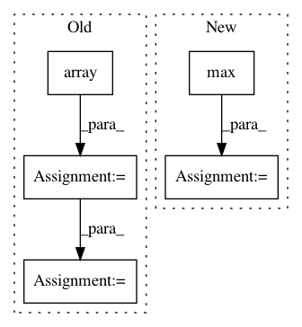

b82419f321b3b52841065e00d1f50945d7e8a2ee,nussl/separation/primitive/hpss.py,HPSS,run,#HPSS#,48
Before Change
// make a mask and return
harmonic_mask = np.array(harmonic_masks).transpose((1, 2, 0))
percussive_mask = np.array(percussive_masks).transpose((1, 2, 0))
both_masks = [harmonic_mask, percussive_mask]
self.masks = []
for mask in both_masks:
if self.mask_type == self.BINARY_MASK:
mask = np.round(mask)
mask_object = masks.BinaryMask(mask)
elif self.mask_type == self.SOFT_MASK:
mask_object = masks.SoftMask(mask)
else:
raise ValueError("Unknown mask type {self.mask_type}!")
self.masks.append(mask_object)
self.result_masks = self.masks
return self.masks
def _compute_spectrograms(self):
After Change
for i in range(_masks.shape[-1]):
mask_data = _masks[..., i]
if self.mask_type == self.MASKS["binary"]:
mask_data = _masks[..., i] == np.max(_masks, axis=-1)
mask = self.mask_type(mask_data)
self.result_masks.append(mask)
return self.result_masks
In pattern: SUPERPATTERN
Frequency: 3
Non-data size: 5
Instances
Project Name: interactiveaudiolab/nussl
Commit Name: b82419f321b3b52841065e00d1f50945d7e8a2ee
Time: 2020-03-16
Author: prem@u.northwestern.edu
File Name: nussl/separation/primitive/hpss.py
Class Name: HPSS
Method Name: run
Project Name: mne-tools/mne-python
Commit Name: fa91217b895957c4106d6175e27d72a48f4f05dc
Time: 2019-01-12
Author: jnu@iki.fi
File Name: mne/viz/topo.py
Class Name:
Method Name: _plot_evoked_topo
Project Name: has2k1/plotnine
Commit Name: d695f661f194ba222386ac4848ac259814de3e49
Time: 2014-04-29
Author: has2k1@gmail.com
File Name: ggplot/geoms/geom_abline.py
Class Name: geom_abline
Method Name: _plot_unit